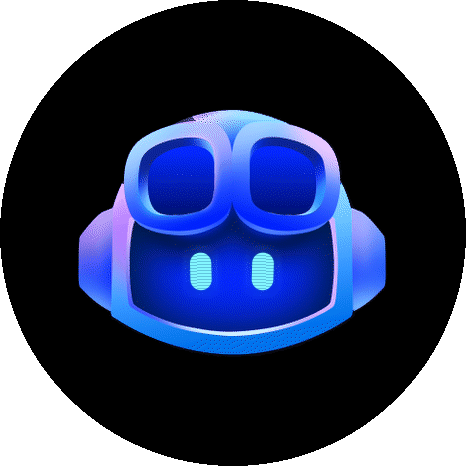

Waveshare / ESP32-S3 / AMOLED
A little more alive.

Deep turns. Curious glances. The occasional blink.
Rendered by the same C++ engine that runs on the board.

Deep turns. Curious glances. The occasional blink.
Rendered by the same C++ engine that runs on the board.